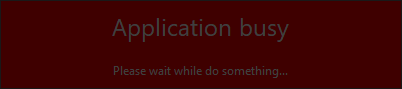

|
xtd
0.2.0
|
Loading...
Searching...
No Matches
busy_dialog.cpp
demonstrates the use of xtd::forms::busy_dialog dialog.
- Windows

- macOS

- Gnome

#include <xtd/drawing/system_icons>
#include <xtd/forms/application>
#include <xtd/forms/busy_dialog>
#include <xtd/forms/button>
#include <xtd/forms/form>
#include <xtd/threading/thread>
using namespace xtd::forms;
using namespace xtd::threading;
public:
form1() {
text("Busy dialog example");
button1.auto_size(true);
button1.location({10, 10});
button1.parent(*this);
button1.text("Do something...");
button1.click += [&] {
dialog.text("Application busy");
dialog.description("Please wait while do something...");
dialog.back_color(xtd::drawing::color::red);
dialog.fore_color(xtd::drawing::color::white);
dialog.opacity(0.75);
dialog.show(*this);
for (auto count = 0; count < 500; ++count) {
application::do_events();
thread::sleep(10);
}
};
}
private:
button button1;
};
auto main()->int {
xtd::forms::application::run(form1 {});
}
static const xtd::drawing::color white
Gets a system-defined color that has an ARGB value of 0xFFFFFFFF. This field is constant.
Definition color.h:473
static const xtd::drawing::color red
Gets a system-defined color that has an ARGB value of 0xFFFF0000. This field is constant.
Definition color.h:404
static xtd::drawing::icon exclamation() noexcept
Gets an xtd::drawing::icon object that contains the system exclamation icon (WIN32: IDI_EXCLAMATION).
static void run()
Begins running a standard application message loop on the current thread, without a form.
Represents a dialog box that displays busy dialog.
Definition busy_dialog.h:35
Represents a window or dialog box that makes up an application's user interface.
Definition form.h:52
The xtd::forms namespace contains classes for creating Windows-based applications that take full adva...
Definition xtd_about_box.h:12
The xtd::threading namespace provides classes and interfaces that enable multithreaded programming....
Definition abandoned_mutex_exception.h:10
Generated on Sat Mar 2 2024 20:38:31 for xtd by Gammasoft. All rights reserved.